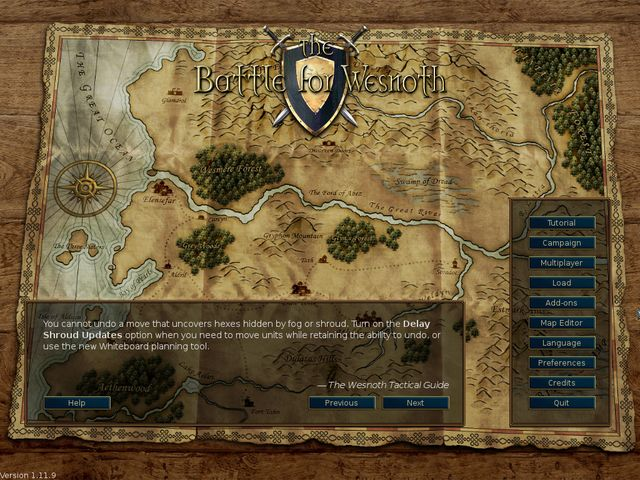

Sisällys
Luettelo tauluista
- 2.1. Kontrollit ja pikanäppäimet
- 2.2. Yksikköihin ja vuoroihin liittyvät pikanäppäimet
- 2.3. Valkotauluun liittyvät pikanäppäimet
- 2.4. Moninpelin pikanäppäimet
- 2.5. Muut pikanäppäimet
- 2.6. Muut pikanäppäimet
- 2.7. Pandoraan liittyvät kontrollit ja pikanäppäimet
- 2.8. Vuorokaudenaika ja aiheutettu vahinko
- 2.9. Taistelemisesta tai tappamisesta saatu kokemus suhteessa vihollisen tasoon
- 2.10. Pallot
Taistelu Wesnothista on vuoropohjainen, fantasia-aiheinen strategiapeli.
Kokoa mahtava armeija koulimalla kokemattomista alokkaista vaiheittain kovapintaisia veteraaneja. Kutsu myöhemmissä peleissä takaisin kovimmat soturisi muodostaaksesi kuolettavan sotajoukon, jolle kukaan ei pärjää! Voit poimia yksikköjä laajasta kirjosta spesialisteja ja valikoida joukon, jolla on oikeat vahvuudet taistella erilaisissa maastoissa kaikenlaisia vihollisia vastaan.
Wesnothissa on monia taruja pelattavaksi. Voit sotia örkkejä, epäkuolleita ja roistoja vastaan Wesnothin kuningaskunnan rajamailla, taistella lohikäärmeiden rinnalla ylväillä vuorenhuipuilla, yhdessä haltioiden kanssa Aethenin metsän saloilla, kääpiöiden kanssa Knalgan suurissa luolastoissa, tai jopa merenväen kanssa Helmilahdella. Voit taistella päästäksesi takaisin Wesnothin valtaistuimelle, hallita epäkuolleita kauheilla voimillasi valloittaaksesi kuolevaisten maat, tai johtaa uljas örkkiheimosi voittoon ihmisistä, jotka julkesivat ryöstää maasi.
Voit valita yksikköjä yli kahdestasadasta eri tyypistä (jalkaväki, ratsuväki, jousiampujat ja velhot ovat vain alkua) ja taistelutapahtumia aina pienyksikköjen väijytyksistä valtavien armeijoiden yhteenottoihin. Voit myös haastaa ystäviäsi – tai vieraita – mittelemään eeppisissä moninpelitaisteluissa fantasiamaailmassa.
Taistelu Wesnothista on avoimen lähdekoodin ohjelma, ja vilkas vapaaehtoisten yhteisö kehittää peliä yhteisvoimin. Voit luoda omia yksiköitä, laatia omia skenaarioita ja jopa käsikirjoittaa täysimittaisia kampanjoita. Käyttäjien ylläpitämää sisältöä on saatavilla lisäosapalvelimelta, ja kaikkein paras siitä liitetään osaksi virallisia julkaisuja.
Wesnoth sijaitsee Suurella mantereella, jonka tunnettu osa jaetaan tavallisesti kolmeen alueeseen: Pohjoisiin maihin, jotka ovat pääosin rauhattomia, Wesnothin kuningaskuntaan ja sen ajoittaiseen ruhtinaskuntaan Elensefariin, sekä lounaisten haltioiden valtakuntaan Aethenin metsässä ja sen tuolla puolen.
Wesnothin kuningaskunta sijaitsee näiden maiden keskiosassa. Sen rajat ovat Suuri joki pohjoisessa, Matalat kukkulat idässä ja etelässä, Aethenin metsien raja lounaassa ja Valtameri lännessä. Elensefaria, entistä Wesnothin maakuntaa, rajaavat Suuri joki pohjoisessa, löyhästi määritelty raja Wesnothin kanssa idässä, Helmilahti etelässä ja Valtameri lännessä.
Pohjoiset maat ovat villiä seutua Suuren joen pohjoispuolella. Erinäiset örkkien, kääpiöiden, barbaarien ja haltioiden ryhmittymät kansoittavat aluetta. Pohjoisessa ja idässä sijaitsee Lintanirin metsä, jossa pohjoisten haltioiden mahtava kuningaskunta keskittyy omiin salaperäisiin asioihinsa.
Ympäri maita on hajallaan kyliä, joissa voit parantaa joukkojasi ja kerätä tarvittavia tuloja ylläpitääksesi armeijaasi. Sinun täytyy myös ylittää vuoristoja ja jokia, tunkeutua läpi metsien, kukkuloiden ja tundran sekä ylittää avoimia ruohotasankoja. Kaikille näille alueille on sopeutunut elämään eri olentoja, jotka voivat kulkea helpommin ja taistella paremmin kun ne ovat tutussa maastossa.
Wesnothin maailmassa elää ihmisiä, haltioita, kääpiöitä, örkkejä, draakkeja, sauriaaneja, merenväkeä, nagoja ja monia muita vielä hämäräperäisempiä ja ihmeellisempiä rotuja. Kirotuilla mailla vaeltavat epäkuolleet, kummitukset ja surmanhenget; raunioissa ja luolastoissa asuu hirviöitä. Jokainen laji on sopeutunut tietynlaisiin maastoihin. Ihmiset asuvat pääosin lauhkeilla ruohikkomailla. Kukkuloilla, vuorilla ja maanalaisissa luolastoissa ovat örkit ja kääpiöt eniten kuin kotonaan. Haltiat ovat metsien kiistämättömiä valtiaita. Merissä ja joissa hallitsevat merenväki ja nagat.
Peliä varten rodut jaetaan liittoumiin. Esimerkiksi örkit ovat usein yhteistyössä peikkojen kanssa ja haltiat tai kääpiöt ihmisten kanssa. Jotkin muut liittoumat kuvaavat jakoja ihmisyhteisöissä – esimerkiksi lojalistit vastaan lainsuojattomat. Suurimmassa osassa kampanjoita kontrolloidaan yksiköitä yhdestä liittoumasta. Joskus kuitenkin liittoumat liittoutuvat keskenään, jolloin skenaariossa saattaa saada vastaansa useamman liittouman.
Kun Wesnoth käynnistyy, se näyttää ensin taustakuvan ja sarakkeen nappeja, eli päävalikon. Napit toimivat vain hiirellä. Jos olet kärsimätön, suosittelemme, että klikkaat Vaihda kieli -nappia (englanniksi Language) valitaksesi käytetyn kielen, sitten Tutoriaali-nappia käynnistääksesi tutoriaalin, ja sitten pelaat kampanjan ”Kahden veljeksen tarina” klikkaamalla Kampanjat-nappia ja valitsemalla se annetusta listasta.

- Tutoriaali
- Tutoriaali on oikea, mutta yksinkertainen peli, joka opettaa joitakin pelaamisessa tarvittavia peruskontrolleja. Oleellista ei ole voittaminen tai häviäminen, vaan pelitaitojen opettelu. Klikkaa Tutoriaali-nappia pelataksesi. Tutoriaalissa otat joko prinssi Konradin tai prinsessa Li’sarin roolin, ja sinua opettaa vanhempi velho Delfador – ole tarkkaavainen tai hän saattaa muuttaa sinut sammakoksi.
- Kampanjat
- Wesnoth suunniteltiin etupäässä kampanjoiden pelaamiseen. Kampanja on sarja toisiinsa liittyviä skenaarioita. Klikkaa tätä nappia aloittaaksesi kampanjan. Esiin tulee lista tietokoneellasi olevista kampanjoista (voit halutessasi ladata niitä lisää). Valitse haluamasi kampanja ja paina OK aloittaaksesi tai Peruuta poistuaksesi. Kussakin kampanjassa on valittavana eri vaikeustasoja. Suosittelemme tasoa ”Normaali”, koska se on melko haastava, mutta ei vaikea. Vaikeustasoa ei voi vaihtaa kesken kampanjan. Jos sinulla on suuria hankaluuksia taistella tiesi läpi helpon vaikeustason, oppaan kohta Perusstrategia varmasti auttaa. Kun olet valinnut vaikeustason, alkaa kampanjan ensimmäinen skenaario.
- Moninpeli
- Klikkaa tätä nappia pelataksesi yksittäisiä skenaarioita yhtä tai useampaa vastustajaa vastaan. Moninpeliä voi pelata Internetissä tai samalla tietokoneella, tietokone- tai ihmisvastustajien kanssa. Tätä nappia painamalla ilmestyy valintaikkuna, josta voit valita, miten haluat pelata skenaarion. Lisätietoja kohdassa Skenaariot.
- Tallennukset
- Klikkaa tätä nappia ladataksesi aiemmin tallennetun pelin. Esiin tulee valintaikkuna, jossa on lista tallennetuista peleistä. Valitse peli ja paina OK jatkaaksesi peliä tai Peruuta palataksesi päävalikkoon. Jos rastitat Näytä uusinta -valintaruudun, voit seurata, kun ladattu peli toistaa kaikki siirrot alusta asti.
- Lisäosat
- Tästä napista pääsee muodostamaan yhteyden sisältöpalvelimelle, jossa on saatavilla hyvin paljon tavallisten käyttäjien luomaa pelisisältöä. Tarjolla on mm. kampanjoita, aikakausia (jotka määrittelevät liittoumia moninpeleissä) ja moninpelikarttoja. Poista lisäosia -napista voit taas halutessasi poistaa niitä.
- Karttaeditori
- Klikkaa tätä nappia päästäksesi karttaeditoriin, jossa voi luoda karttoja moninpelejä tai omaa kampanjaasi varten.
- Vaihda kieli
- Valitse kieli tästä napista avautuvasta valikosta ja paina OK ottaaksesi sen käyttöön, tai Peruuta jatkaaksesi nykyisellä kielellä. Kun Wesnoth käynnistyy ensimmäisen kerran, se käyttää oletuksena englantia tai järjestelmäsi kieltä, jos se voidaan määrittää. Jos olet vaihtanut kielen, peli käyttää sitä käynnistyessään.
- Asetukset
- Klikkaa tätä muuttaaksesi asetuksia.
- Tekijät
- Tätä nappia klikkaamalla näet listan Wesnothin vaikuttajista. Osan heistä saa usein kiinni IRC-verkosta irc.freenode.org:6667 kanavalta #wesnoth.
- Lopeta
- Tästä napista Wesnoth sulkeutuu.
- Ohje
- Tästä napista klikkaamalla avautuu pelin sisäinen ohje. Se sisältää paljon tietoa yksiköistä ja muista tärkeistä, pelaamiseen liittyvistä asioista. Suurin osa niistä on myös mainittu tässä oppaassa.
- Seuraava
- Klikkaa tätä nappia lukeaksesi seuraavan vihjeen ”Wesnothin kirjasta”.
- Edellinen
- Klikkaa tätä nappia lukeaksesi edellisen vihjeen ”Wesnothin kirjasta”.
On kaksi perustapaa pelata Taistelua Wesnothista:
- Pelaa kampanja, eli sarja yhteen liitettyjä skenaarioita, tietokonetta vastaan.
- Pelaa yksittäinen skenaario tietokone- tai ihmisvastustajia vastaan.
Kampanjat ovat taistelujen sarja, joita yhdistää tarina. Tyypillisissä kampanjoissa on noin 10–20 skenaariota. Suurin hyöty kampanjoista on, että niiden kuluessa armeijaansa voi kehittää. Skenaarion päättyessä jäljelle jäävät yksiköt ovat käytettävissä myös seuraavassa skenaariossa. Jos päätät olla käyttämättä jotakin yksikköä skenaarion aikana, se siirtyy seuraavaan, joten et menetä käyttämättömiä yksikköjä.
Wesnoth on pääasiassa tarkoitettu kampanjoiden pelaamiseen. Niiden pelaaminen on myös todennäköisesti nautinnollisinta ja uusille pelaajille suositeltavinta pelaamisen opettelussa.
Yksittäisen skenaarion läpäisy kestää suunnilleen 30 minuutista kahteen tuntiin. Tämä on nopein tapa pelata, mutta yksikköjäsi ei säästetä etkä voi käyttää kampanjayksikköjä. Skenaarioita voi pelata tietokonetta vastaan tai toisia pelaajia vastaan joko Internetin kautta tai samalla tietokoneella. Skenaarioihin pääsee klikkaamalla Moninpeli-nappia päävalikossa.
Yleensä moninpelejä pelataan muita pelaajia vastaan Internetin kautta (voit myös käyttää lähiverkkoa, jos sinulla on sellainen). Kaikkia näitä pelejä koordinoidaan Wesnoth-moninpelipalvelimen avulla. Moninpelit voivat kestää tunnista jopa kymmeneen tuntiin, riippuen pelaajien määrästä (ja kartan koosta). Keskimääräinen peliaika on kolmesta seitsemään tuntiin. Pelit voidaan tallentaa ja ladata miten monta kertaa tahansa, joten on mahdollista, että jotkin niistä kestävät viikon tai kaksi, vaikka varsinainen peliaika on muutaman tunnin mittainen. Moninpelissä yksiköitä ei voi siirtää mukanaan skenaariosta toiseen, joten armeijan vahvuuden kasvattaminen on mahdollista vain skenaarion aikana.
Moninpeli-napista aukeavassa valikossa on seuraavat vaihtoehdot:

Tämä on nimesi moninpelipalvelimella. Jos sinulla on tili Wesnothin foorumeilla, voit kirjautua tilin käyttäjänimellä ja salasanalla. Salasanaikkuna ponnahtaa esiin, jos valitsemallesi käyttäjänimelle tarvitaan salasana. Et voi käyttää rekisteröityä nimeä ilman salasanaa.
Tämä vaihtoehto yhdistää suoraan viralliselle palvelimelle. Päädyt aulaan, jossa voit halutessasi käynnistää omia pelejä tai liittyä muiden luomiin avoimiin peleihin. Aulassa voit tavata muita, jotka haluaisivat liittyä uuteen otteluun.
Tästä vaihtoehdosta aukeaa valintaikkuna, johon kirjoitetaan pelipalvelimen osoite. Ikkunassa on myös Katso listaa -nappi, joka näyttää listan virallisista palvelimista, joita voi käyttää varalla, jos pääpalvelin ei ole käytettävissä.
Täydellinen lista virallisista ja käyttäjien ylläpitämistä julkisista palvelimista on tällä verkkosivulla: Multiplayer servers.
Tästä valinnasta voi myös yhdistää kenen tahansa ylläpitämälle pelipalvelimelle. Joten. jos sinulla on palvelin käynnissä paikallisverkossasi, syötä vain oikea osoite ja porttinumero (oletus: 15000). Jos esimerkiksi haluaisit yhdistää palvelimelle, joka on osoitteessa 192.168.0.10 olevalla koneella ja oletusportissa, kirjoittaisit valintaikkunaan näin: ”192.168.0.10:15000”.
Sinun täytyy käynnistää palvelinohjelma voidaksesi käynnistää verkkomoninpelin ilman ulkoista moninpelipalvelinta, yleensä nimeltään wesnothd. Tämä ohjelma käynnistyy automaattisesti taustalle tästä valinnasta. Se lopetetaan, kun kaikki pelaajat ovat poistuneet palvelimelta. Muiden pelaajien pitää voida yhdistää TCP:llä koneesi porttiin 15000 pelatakseen palvelimellasi. Jos olet palomuurin takana, sinun täytyy todennäköisesti muuttaa sen asetuksia niin, että sisääntulevat yhteydet porttiin 15000 on sallittu, ja että palomuuri ohjaa sellaisen liikenteen koneelle, joka toimii pelipalvelimena. Palomuurin asetuksia ei yleensä tarvitse muuttaa liittyäkseen peleihin yleisillä palvelimilla tai jonkun toisen koneella.
Tämä luo yhdellä tietokoneella pelattavan moninpelin – joko ns. hotseat-pelin, jossa jokainen pelaa vuorollaan samalla tietokoneella, tai pelkkiä tekoälyvastustajia, eli tietokonetta vastaan. Hotseat-pelit kestävät suunnilleen yhtä kauan kuin Internet-pelit. Tekoälyä vastaan pelaaminen voi olla hyvä keino tutustua moninpeleissä käytettäviin eri karttoihin ennen toisia ihmisiä vastaan pelaamista. Sitä voi käyttää myös yksinkertaisena keinona tutustua eri liittoutumien yksiköiden ominaisuuksiin valitsemalla, millä liittoumalla itse pelaat ja mitä liittoutumia vastustajasi ovat. Tietenkin näitä pelityylejä voi myös yhdistellä, eli voit pelata ystäviesi kanssa tekoälyvastustajaa vastaan.

Sekä yksittäistä skenaariota että kampanjaa pelatessa peliruudun perusasettelu on sama. Suurimman osan ruudusta täyttää kartta, joka näyttää kaiken pelissä tapahtuvan toiminnan. Kartan ympärillä on erilaisia elementtejä, jotka antavat hyödyllistä tieto pelistä. Ne on kuvattu tarkemmin alla.

Ruudun yläreunassa on, vasemmalta oikealle:
- Valikko-nappi
- Toiminnot-nappi
- Vuorolaskuri (tämänhetkinen vuoro / vuorojen enimmäismäärä)
- Kultasi
- Kyliä (sinun kyläsi / kylien kokonaismäärä)
- Yksikköjesi määrä
- Ylläpitokulusi
- Tulosi
- Kellonaika tai aikaa jäljellä (moninpeleissä)

Ruudun oikeassa reunassa on, ylhäältä alas:
- Koko kartta kutistettuna
- Current hex position (x-coordinate, y-coordinate), defense and movement of the currently selected unit on the marked hex
- Tämänhetkisen heksan tyyppi
- Vuorokaudenajan näyttö
- Viimeksi valitun yksikön tiedot
- Lopeta vuoro -nappi
Skenaarion tai kampanjan alussa sinulla on vain muutama yksikkö kartalla. Yksi niistä on johtajasi (tunnuksenaan pieni kultainen kruunukuvake). Johtajasi aloittaa yleensä linnasta erikoisheksasta, jota sanotaan linnakkeeksi. Aina kun johtajasi on linnakkeessa (ei välttämättä omassasi, vaan myös missä tahansa valtaamassasi linnassa) ja sinulla on tarpeeksi kultaa, voit värvätä yksikköjä armeijaasi. Kampanjan myöhemmissä skenaarioissa voit kutsua takaisin kokeneita yksikköjä, jotka ovat selvinneet aikaisemmista skenaarioista. Näin voit alkaa koota armeijaasi vihollisen lyömiseksi.
Ensimmäiseksi haluat varmaankin värvätä ensimmäisen yksikkösi. Paina
Ctrl+R (tai klikkaa oikealla hiirennapilla tyhjää
linnaheksaa ja valitse ”Värvää”) ja voit valita värvättävän yksikön
listalta, jossa on kaikki sillä hetkellä saatavilla olevat yksiköt. Jokainen
värvätty sijoitetaan tyhjään linnaheksaan. Kun olet täyttänyt linnan, et voi
värvätä enempää ennen kuin siirrät yksiköt pois. Vastustajasi johtaja on
myös linnakkeessaan, värväämässä omia joukkojaan – joten älä vetelehdi
maisemia ihaillen, sinulla on taistelu voitettavana.
Onnistuneen skenaarion jälkeen kaikki jäljellä olevat joukkosi talletetaan automaattisesti. Seuraavan skenaarion aikana voit kutsua niitä takaisin palvelukseen lähes samaan tapaan kuin värväisit uusia joukkoja. Takaisin kutsutut joukot ovat usein kokeneempia, ja näin ollen parempi valinta.
Kaikki pelimuodot käyttävät samoja sotilaita, eli yksiköitä. Rotu, luokka ja kokemustaso erottavat yksiköt toisistaan. Kullakin yksiköllä on vahvuutensa ja heikkoutensa riippuen sen vastustusarvoista, tasosta ja kulloisestakin maastosta. Yksityiskohdat löytyvät pelinsisäisestä ohjeesta.
Joukkojesi kerätessä taistelukokemusta ne tulevat taitavammiksi ja vahvemmiksi. Niitä myös kuolee taistelussa, jolloin sinun täytyy värvätä ja kutsua lisää. Valitse kuitenkin viisaasti, koska jokaisella niistä on vahvuutensa ja heikkoutensa, joita ovela vastustaja käyttää nopeasti hyväkseen.
Huomioi tarkasti tavoiteikkuna jokaisen skenaarion alussa. Yleensä voitat tappamalla kaikki vihollisjohtajat ja häviät vain, jos oma johtajasi kuolee. Skenaarioilla voi kuitenkin olla muitakin voittoedellytyksiä – saada johtajasi tiettyyn paikkaan, jonkun pelastaminen, arvoituksen ratkaiseminen, tai paikan puolustaminen, kunnes tietty määrä vuoroja on kulunut.
Kun voitat skenaarion, kartta harmaantuu ja Lopeta vuoro -nappi muuttuu Päätä skenaario -napiksi. Voit vielä tehdä asioita, kuten muuttaa tallennusasetuksia tai (moninpelissä) keskustella muiden pelaajien kanssa, ennen kuin painat lopetusnappia päästääksesi takaisin palvelimen aulaan / valikkoon.
Armeijasi ei taistele ilmaiseksi. Sekä yksikköjen värväys, että ylläpito maksetaan kullalla. Aloitat skenaariot sillä kultamäärällä, joka sait mukaasi edellisistä skenaarioista (saat kultaa kuitenkin joka skenaarioon vähimmäismäärän aloittamiseen, ellet saanut mukaasi tarpeeksi). Skenaarion aikana kultaa voi kerätä lisää saavuttamalla skenaarion tavoitteet nopeasti ja hallitsemalla kyliä. Jokainen hallittu kylä tuottaa kaksi kultapalaa vuorossa. Skenaarion aluksi kannattaa yleensä ottaa haltuunsa mahdollisimman monta kylää varmistaakseen, että tulot riittävät sodankäyntiin. Kulloinenkin kultamäärä ja tulot näkyvät ruudun yläosassa, kuten selitetään kohdassa Peliruutu.
Jokaisen skenaarion alussa peli tallentuu automaattisesti. Jos häviät, voit ladata tallennuksen ja yrittää uudestaan. Kun voitat, sinulta kysytään haluatko tallentaa seuraavan skenaarion ja pelata sitä. Jos sinun täytyy lopettaa pelaaminen kesken skenaarion, voit tallentaa pelin vuorollesi. Muista kuitenkin, että hyvän Wesnoth-pelaajan ei tarvitse koskaan tallentaa skenaarion aikana. Toisaalta useimmat aloittelijat tapaavat tehdä niin melko usein.
Nämä ovat vakiokontrollit. Näppäimistöasetukset voivat vaihdella alustasta riippuen. Esimerkiksi sinun täytyy usein käyttää komentonäppäintä Ctrl -näppäimen sijaan, jos käytät Mac OS X:ää. Voit määrittää suurimman osan pikanäppäimistä makusi mukaan Asetuksista.
Taulu 2.1. Kontrollit ja pikanäppäimet
| F1 | Taistelu Wesnothista -ohje |
| Nuolinäppäimet | Vieritä ruutua |
| Klikkaus vasemmalla hiirennapilla | Valitse tai siirrä yksikköä |
| Klikkaus oikealla hiirennapilla | Ponnahdusvalikko tai toiminnon peruutus |
| Klikkaus hiiren keskinapilla | Keskitä kursorin sijaintiin. |
| Esc | Lopeta peli, poistu valikosta tai peruuta viesti |
| Ctrl+s | Tallenna peli |
| Ctrl+o | Lataa peli |
| Ctrl+p | Avaa asetusvalikko |
| Ctrl+q | Lopeta peli |
| Ctrl+f | Vaihda koko ruudun ja ikkunoidun tilan välillä |
| Ctrl+Alt+m | Äänitehosteet ja musiikki päälle / pois päältä |
| + | Suurenna karttanäkymää |
| - | Pienennä karttanäkymää |
| 0 | Palauta normaalisuurennus |
| Ctrl+e | Näytä tai piilota ellipsit |
| Ctrl+g | Näytä tai piilota ruudukko |
| Ctrl+a | Kiihdytetty nopeus päälle / pois päältä |
| Shiftin painaminen | Vaihda normaalin ja kiihdytetyn pelitilan välillä kun näppäin on pohjassa (väliaikainen) |
| Ctrl+j | Näytä skenaarion tavoitteet |
| s | Näytä tilastot |
| Alt+s | Näytä tilannetaulukko |
| Alt+u | Näytä yksikkölista |
| l | Siirry johtajayksikön luo |
| Shift+s | Päivitä peite nyt |
Taulu 2.2. Yksikköihin ja vuoroihin liittyvät pikanäppäimet
| Ctrl+r | Värvää yksikkö |
| Ctrl+alt+r | Toista viimeisin värväys |
| Alt+r | Kutsu takaisin palvelukseen |
| Ctrl+rn | Vaihda yksikön nimeä |
| d | Näytä valitun yksikön kuvaus |
| t | Jatka keskeytynyttä yksikön siirtoa |
| u | Peruuta edellinen siirto (vain deterministiset liikkeet voi peruuttaa) |
| r | Tee siirto uudelleen |
| n | Käy läpi yksiköt, joilla on liikepisteitä jäljellä |
| Shift+n | Käy läpi yksiköt, joilla on liikepisteitä jäljellä, käännetyssä järjestyksessä |
| Ctrl+v | Näytä vihollisen liikkeet (mihin vihollinen voi liikkua seuraavalla vuorolla) |
| Ctrl+b | Näytä vihollisen mahdolliset siirrot, jos sinun yksikkösi eivät olisi kartalla |
| 1–7 | Näytä miten kauas valittu yksikkö voi liikkua näin monessa vuorossa |
| välilyönti | Lopeta vuoro yksikön osalta ja siirry seuraavaan, jolla on liikepisteitä jäljellä |
| Shift+välilyönti | Jätä valittu yksikkö asemiin (lopeta sen liikkuminen toistaiseksi) |
| Ctrl+välilyönti | Päätä tämän pelaajan vuoro |
Taulu 2.3. Valkotauluun liittyvät pikanäppäimet
| p | Suunnittelutila päälle / pois |
| y | Suorita suunniteltu toiminto |
| h | Poista suunniteltu toiminto |
| Page Down | Siirrä toiminto alemmas jonossa |
| Page Up | Siirrä toiminto ylemmäs jonossa |
| Ctrl+y | Suorita kaikki toimet |
| i | Oleta kuolleeksi |
Taulu 2.4. Moninpelin pikanäppäimet
| m | Lähetä viesti toiselle pelaajalle moninpelissä |
| Ctrl+m | Lähetä viesti liittolaisillesi moninpelissä |
| Alt+m | Lähetä viesti kaikille moninpelissä |
| Alt+c | Avaa keskusteluhistoria |
| Ctrl+x | Poista viestit |
Taulu 2.5. Muut pikanäppäimet
| Ctrl+c | Poista karttamerkinnät (ei toimi kaikissa versioissa) |
| / | Etsi karttamerkintä tai yksikkö nimeltä |
| Alt+l | Lisää karttamerkintä maastoheksaan |
| Ctrl+l | Lisää joukkueen karttamerkintä |
| : | Komentotila [linkki englanninkieliseen ohjeeseen] |
| F5 | Päivitä välimuisti |
| Shift+c | Luo yksikkö (Debug!) |
| f | Suorita tekoälykaava |
Jotkut näppäimet MacOSX:ssä vaatii enemmän kuin Ctrl -näppäimen korvaamisen Cmd:llä. Tässä lista niistä:
Taulu 2.6. Muut pikanäppäimet
| Cmd+w | Lopeta peli |
| Cmd+, | Avaa asetusvalikko |
| Ctrl+F5 | Päivitä välimuisti |
| Option+Space | Päätä tämän pelaajan vuoro |
Joitakin pikanäppäimiä muutettiin hieman, jotta Pandoran kontrollit tulisivat parempaan käyttöön. Jos käytät Pandoraa, nämä näppäimet eroavat yllä esitetyistä:
Taulu 2.7. Pandoraan liittyvät kontrollit ja pikanäppäimet
| D-Pad | Vieritä ruutua |
| GamingButton A | Värvää yksikkö |
| GamingButton B | Peruuta edellinen siirto (vain deterministiset liikkeet voi peruuttaa) |
| GamingButton X | Käy läpi yksiköt, joilla on liikepisteitä jäljellä |
| GamingButton Y | Kutsu takaisin palvelukseen |
| Alt+GamingButton Y | Siirrä toiminto alaspäin jonossa |
| Alt+GamingButton X | Siirrä toiminto ylös jonossa |
Jokainen osapuoli aloittaa tietyllä kultamäärällä ja saa kaksi kultapalaa vuorossa sekä kaksi lisää jokaista hallitsemaansa kylää kohden. Kampanjassa aloituskullan määrittelee skenaarion minimikultamäärä. Yleensä määrä on pienempi vaikeimmilla vaikeusasteilla. Lisäksi edellisestä skenaariosta voi saada tietyn prosenttiosuuden seuraavaan skenaarioon. Tarkka prosenttimäärä riippuu skenaariosta, ja se yleensä näytetään tehtävänannossa.

Tärkein kullan käyttökohde on armeijan kokoaminen värväämällä uusia yksiköitä ja kutsumalla takaisin yksiköitä kampanjan aiemmista skenaarioista. Yksiköitä voi värvätä tai kutsua, kun johtaja on linnakkeessa, jonka linnaheksoista on ainakin yksi vapaana.
- Klikkaamalla oikealla hiirennapilla tyhjää linnaheksaa ja valitsemalla ”Värvää” saat listan yksiköistä, joita voit värvätä palvelukseen. Värväämisen hinta riippuu yksiköstä, mutta on yleensä 10–20 kultapalaa.
- Klikkaa oikealla hiirennapilla tyhjää linnaheksaa ja valitse ”Kutsu veteraaniyksikkö” kutsuaksesi takaisin yksiköitä edellisistä skenaarioista. Kutsuminen maksaa 20 kultapalaa yksikköä kohden. Lisätietoja on kohdassa Veteraaniyksikköjen kutsuminen.
Jokainen yksikkö vaatii myös ylläpitoa. Ylläpitokustannus on tavallisesti yksikön tason suuruinen, ellei yksiköllä ole piirrettä uskollinen (ks. selitys alla). Yksiköt, joita ei tarvitse värvätä – eli johtaja tai ne, jotka liittyvät vapaaehtoisesti – ovat yleensä uskollisia. Ylläpitoa maksetaan vain, jos yksiköiden kokonaisylläpito on suurempi kuin osapuolen hallitsemien kylien määrä. Maksettu summa on kylien määrän ja ylläpitokustannusten erotus.
Tulojen määrä vuorossa selviää siis kaavalla:
2 + kylät - maksimi(0, ylläpito - kylät)
jossa ”upkeep”, eli ylläpito, on ei-uskollisten yksiköittesi tasojen summa, ja ”villages” on hallitsemiesi kylien määrä.
Jos ylläpitokustannukset ovat suuremmat kuin kylien määrä + 2, osapuoli alkaa menettää kultaa; jos ne ovat yhtä suuret, kultamäärä ei kasva eikä vähene.
Taistelussa Wesnothista on satoja yksikkötyyppejä monipuolisine ominaisuuksineen. Yksittäisillä yksiköillä on myös erityisiä piirteitä, jotka tekevät niistä hieman erilaisia muihin samantyyppisiin yksiköihin nähden. Kampanjoiden laatijat voivat vielä lisätä ainutkertaisia yksiköitä kampanjoihinsa laajentaakseen edelleen pelaamisen mahdollisuuksia.
Yksikön perustietoihin kuuluvat sen elämäpisteiden (EP) ja liikepisteiden määrä sekä mitä aseita sillä on ja paljonko vahinkoa ne aiheuttavat. Yksiköillä on lisäksi muita ominaisuuksia, kuten suuntautuminen ja erikoistaidot, joista kerrotaan alla tarkemmin.
Joka yksiköllä on suuntautuminen: lainkuuliainen, neutraali, kaoottinen tai liminaali. Suuntautuminen vaikuttaa yksikön suoritukseen eri vuorokaudenaikoina. Neutraaleihin yksiköihin vuorokaudenaika ei vaikuta. Lainkuuliaiset aiheuttavat enemmän vahinkoa päivällä ja vähemmän yöllä. Kaoottiset aiheuttavat enemmän vahinkoa yöllä ja vähemmän päivällä. Liminaalit aiheuttavat eniten vahinkoa aamulla ja illalla.
Kaksi päivä- ja yövaihetta erotellaan toisistaan aamupäiväksi ja iltapäiväksi sekä aamuyöksi ja iltayöksi auringon ja kuun sijainnin mukaan vuorokaudenaikanäytössä.
Seuraava taulukko esittää vuorokaudenaikojen vaikutuksen lainkuuliaisten, kaoottisten ja liminaalien yksiköiden aiheuttamaan vahinkoon:
Taulu 2.8. Vuorokaudenaika ja aiheutettu vahinko
| Vuoro | Kuva | Vuorokaudenaika | Lainkuuliainen | Kaoottinen | Liminaali |
|---|---|---|---|---|---|
| 1 | Aamu | - | - | - | |
| 2 |

| Aamupäivä | +25% | −25% | −25% |
| 3 |

| Iltapäivä | +25% | −25% | −25% |
| 4 |

| Ilta | - | - | - |
| 5 |

| Iltayö | −25% | +25% | −25% |
| 6 |

| Aamuyö | −25% | +25% | −25% |
| Poikkeus |

| Maan alla | −25% | +25% | −25% |
Muista, että jotkin taistelut käydään maan alla, missä on jatkuvasti yö!
Esimerkki: lainkuuliainen ja kaoottinen yksikkö, jotka kummatkin aiheuttavat
perusvahinkoa 12 pistettä, taistelevat keskenään. Aamulla tai illalla
molemmat aiheuttaisivat osuessaan 12 pistettä vahinkoa. Aamu- tai
iltapäivällä lainkuuliainen aiheuttaisi 12 × 1,25 eli 15
pistettä ja kaoottinen 12 × 0,75 eli 9 pistettä
vahinkoa. Ilta- tai aamuyöllä lainkuuliaisen yksikön aiheuttama vahinko
olisi 9 ja kaoottisen 15 pistettä.
Jos vastaava neutraali yksikkö taistelisi, se aiheuttaisi aina 12 pistettä vahinkoa vuorokaudenajasta riippumatta.
Yksiköillä on piirteitä, jotka kuvaavat niiden yksilöllisiä ominaisuuksia. Piirteet valitaan satunnaisesti yksikön luonnin yhteydessä. Useimmilla yksiköillä on kaksi piirrettä.
Suurimmalle osalle yksiköitä mahdolliset piirteet ovat seuraavat:
- Älykäs
- Älykkäät yksiköt tarvitsevat 20% tavallista vähemmän kokemusta edistyäkseen (peikot eivät saa tätä piirrettä). Älykkäät yksiköt ovat erittäin hyödyllisiä kampanjan alussa, koska ne saavuttavat korkeita tasoja nopeammin. Myöhemmin kampanjassa ne eivät ole yhtä hyödyllisiä, koska enimmäistason jälkeinen yleneminen (EJY) ei ole niin merkittävä muutos kuin tasolla edistyminen. Jos sinulla on monta enimmäistason yksikköä, kannattaa ehkä kutsua yksiköitä, joilla on hyödyllisempiä piirteitä.
- Nopea
- Nopeilla yksiköillä on 1 ylimääräinen liikepiste, mutta 5% vähemmän elämäpisteitä. Nopeus on huomattavin piirre, etenkin hitaasti liikkuvilla yksiköillä, kuten peikoilla ja raskaalla jalkaväellä. Nopeilla yksiköillä on usein paljon helpompaa liikkua vaikeassa maastossa, mikä saattaa olla tärkeää huomioida joukkoja levitettäessä. Nopeat yksiköt eivät kuitenkaan ole aivan yhtä kestäviä kuin yksiköt ilman tätä piirrettä, joten niillä on vaikeaa suojata tärkeitä kohteita.
- Kestävä
- Kestävillä yksiköillä on 4 EP tavallista enemmän ja lisäksi 1 EP tasoa kohden. Tämä on hyödyllinen piirre kaikilla yksiköillä ja kampanjan joka vaiheessa. Kestävyys on usein hyödyllisimmillään, kun yksiköllä on jokin yhdistelmä näistä: matalat elämäpisteet, hyvä puolustus tai korkeat vastustusarvot. Kestävät yksiköt ovat erityisen hyviä pitämään tärkeitä asemia vihollisia vastaan.
- Vahva
- Vahvat yksiköt aiheuttavat vahinkoa yhden pisteen enemmän jokaisella onnistuneella lyönnillä lähitaistelussa ja niillä on yksi EP enemmän. Vaikka vahvuus onkin hyödyksi mille tahansa lähitaisteluyksikölle, on se tehokkainta yksiköillä, joilla on suuri määrä hyökkäyksiä, kuten haltiasoturilla. Vahvat yksiköt voivat olla hyvin hyödyllisiä kun tarvitaan vain hitusen lisävahinkoa muuttamaan vahingoittava isku tappavaksi.
On myös piirteitä, joita saavat vain tietyntyyppiset tai tietynrotuiset yksiköt. Niitä ovat:
- Taitava
- Taitavat yksiköt tekevät 1 pisteen enemmän vahinkoa jokaisella onnistuneella kaukotaisteluiskulla. Taitavuus on piirre, jonka saavat vain haltiat. Haltioiden kansa tunnetaan salaperäisestä viehkeydestään ja taidokkaasta jousen käsittelystään. Joillekin heistä on kuitenkin suotu poikkeuksellisen suuri luontainen lahjakkuus. Nämä haltiat aiheuttavat ylimääräisen vahinkopisteen joka nuolella.
- Peloton
- Yksikkö ei saa negatiivista hyökkäysbonusta epäsuotuisaan vuorokaudenaikaansa (raskas jalkaväki, kuolonsyöjät, peikot, elävät kuolleet).
- Elinvoimainen
- Kääpiöt ovat tunnettuja elinvoimaisuudestaan. Jotkut heistä ovat muita sitkeämpiä ja voivat levätä jopa matkatessaan. Elinvoimaisilla yksiköillä on 1 EP ja 1 EP jokaista tasoa kohden enemmän kuin tavallisesti ja ne paranevat 2 EP joka vuorolla, jolla eivät taistelleet. Ne myös kärsivät vahinkoa myrkytyksestä neljänneksen vähemmän.
Jotkin piirteet eivät määräydy satunnaisesti. Nämä piirteet valitsee skenaarion suunnittelija, tai ne määräytyvät automaattisesti yksikkötyypin perusteella:
- Aged
- The oldest units may have the Aged trait, receiving an 8 points HP decrease and having -1 movement and melee damage.
- Dim
- Units with the Dim trait require 20% more experience to advance.
- Elemental
- Elemental units aren’t alive and thus are immune to poison, and drain and plague don’t work on them. Elemental units generally have Elemental as their only trait.
- Feral
- Units with the Feral trait only receive 50% defense in villages regardless of the base terrain the village is on.
- Uskollinen
- Uskolliset yksiköt eivät vaadi ylläpitoa. Useimmat yksiköt aiheuttavat tasonsa verran ylläpitokuluja joka vuoron lopuksi. Uskollisista yksiköistä tätä maksua ei tarvita. Kampanjoiden aikana tietyt yksiköt voivat liittyä pelaajan joukkoihin vapaaehtoisesti. Näillä yksiköillä on piirre uskollinen. Vaikka niiden takaisin kutsuminen saattaakin maksaa, eivät ne koskaan tarvitse ylläpitoa. Tästä syystä ne voivat olla korvaamattomia pitkän kampanjan aikana, kun kulta on vähissä. Värvätyt yksiköt eivät koskaan saa tätä piirrettä, joten uskollisia yksiköitä ei välttämättä kannata vapauttaa palveluksesta tai tapattaa turhaan.
- Mekaaninen
- Mechanical units aren’t alive and thus are immune to poison, and drain and plague don’t work on them. Mechanical units generally have Mechanical as their only trait.
- Hidastus
- Large, unwieldy units with the Slow trait have -1 movement and 5% more hitpoints.
- Epäkuollut
- Epäkuolleet yksiköt ovat immuuneja myrkylle, eikä elämänimu tai rutto vaikuta niihin. Epäkuolleilla on yleensä epäkuollut ainoana piirteenään. Koska epäkuolleet yksiköt ovat uudelleen taistelemaan nousseita kuolleiden ruumiita, myrkky ei tehoa niihin. Tämä voi tehdä niistä korvaamattomia taistelussa myrkkyä käyttäviä vihollisia vastaan.
- Weak
- Units may have the Weak trait, receiving a -1 increment in hitpoints and melee damage.
Joillain yksiköillä on erikoisia hyökkäyksiä. Tässä on lista niistä:
- Selkäänpuukotus
- Offensiivisesti käytettynä tämä hyökkäys kaksinkertaistaa vahingon, jos kohteen vastakkaisella puolella on sille vihamielinen, taistelukykyinen yksikkö (ei esimerkiksi jähmetetty).
- Hurmos
- Sekä offensiivisesti että defensiivisesti käytettynä tämä hyökkäys jatkaa ottelua, kunnes toinen taistelijoista kaatuu tai 30 kierrosta iskujen vaihtoa on kulunut.
- Rynnäkkö
- Offensiivisesti käytettynä tämä hyökkäys kaksinkertaistaa kohteelle aiheutetun vahingon. Se myös kaksinkertaistaa hyökkäyksen kohteen vastahyökkäyksellään aiheuttaman vahingon.
- Elämänimu
- Tämä yksikkö imee eläviltä yksiköiltä elinvoimaa, parantaen itseään puolella aiheuttamastaan vahingosta (alas pyöristettynä).
- Ensi-isku
- Tämä yksikkö iskee aina ensimmäisenä tällä hyökkäyksellä, jopa puolustaessaan.
- Maaginen
- Tällä hyökkäyksellä on aina 70% mahdollisuus osua riippumatta kohteen puolustusarvosta.
- Tarkk’ampuja
- Offensiivisesti käytettynä tällä hyökkäyksellä on aina vähintään 60% mahdollisuus osua.
- Rutto
- Kun yksikkö tapetaan ruttohyökkäyksellä, se korvataan elävällä kuolleella, joka on samalla puolella kuin ruton tartuttanut yksikkö. Tämä ei toimi epäkuolleisiin eikä kylissä oleviin yksikköihin.
- Myrkky
- Tämä hyökkäys myrkyttää kohteen. Myrkytetyt yksiköt menettävät 8 EP joka vuorolla, kunnes ne saavat lääkitystä tai jäljellä on yksi EP. Myrkky ei voi itsessään tappaa yksikköä.
- Hidastus
- Tämä hyökkäys hidastaa kohteen, kunnes sen seuraava vuoro päättyy. Hidastus puolittaa aiheutetun vahingon määrän ja kaksinkertaistaa liikkumiskustannukset. Sivupalkin tiedoissa on etanan kuva hidastetun yksikön ollessa valittuna.
- Jähmetys
- Tämä hyökkäys jähmettää kohteen. Jähmetetyt yksiköt eivät voi liikkua eivätkä hyökätä.
- Parvi
- Tämän hyökkäyksen iskujen määrä vähenee yksikön haavoittuessa. Iskujen määrä on verrannollinen jäljellä olevien ja täysien elämäpisteiden suhteeseen. Jos yksiköllä on esimerkiksi jäljellä 3/4 elämäpisteistään, käyttää se vain 3/4 iskuistaan.
Joillain yksiköillä on erikoistaitoja, jotka vaikuttavat joko suoraan toisiin yksiköihin tai yksikön vuorovaikutukseen ympäristön kanssa. Nämä taidot on listattu alla:
- Väijytys
- Tämä yksikkö voi piiloutua metsään ja pysytellä näkymättömissä vihollisilta. Kun se on metsässä, viholliset näkevät sen vain, jos jokin niiden oma yksikkö on sen vieressä. Vihollisyksikkö, joka löytää tämän yksikön, menettää kaikki jäljellä olevat liikepisteensä.
- Piiloutuminen
- Tämä yksikkö voi piiloutua kyliin (ei kuitenkaan uponneisiin kyliin) ja pysytellä näkymättömissä vihollisilta, paitsi niiltä, jotka seisovat sen vieressä. Kun tämä yksikkö on kylässä, viholliset näkevät sen vain, jos jokin niiden oma yksikkö on sen vieressä. Vihollisyksikkö, joka löytää tämän yksikön, menettää kaikki jäljellä olevat liikepisteensä.
- Lääkitsee
- Yksikkö, joka voi parantaa ystävänsä myrkytyksestä. Lääkittävä yksikkö ei kuitenkaan saa muuta parannusta samalla vuorolla.
- Feeding
- This unit gains 1 hitpoint added to its maximum whenever it kills a unit, except units that are immune to plague.
- Hoivaa +4
- Yksikkö voi hoivata viereisiä ystävällisiä yksiköitä jokaisen vuoron alussa. Hoivattu yksikkö paranee enintään 4 EP vuorossa tai säästyy myrkyn vaikutukselta vuoron aikana. Hoivaaja ei voi parantaa yksikköä myrkytyksestä, sillä se onnistuu vain lääkitsijältä tai kylässä.
- Hoivaa +8
- Tämä yksikkö yhdistää taikuutta ja luontaislääkkeitä parantaen yksiköitä nopeammin kuin taistelurintamalla on tavallisesti mahdollista. Hoivattu yksikkö paranee enintään 8 EP vuorossa tai säästyy myrkyn vaikutukselta vuoron aikana. Hoivaaja ei voi parantaa yksikköä myrkytyksestä, sillä se onnistuu vain lääkitsijältä tai kylässä.
- Valaisee
- Tämä yksikkö valaisee ympäröivän alueen tehden lainkuuliaisista yksiköistä parempia ja kaoottisista huonompia taistelemaan. Kaikki yksiköt tämän yksikön ympärillä taistelevat yöllä kuin olisi ilta ja illalla kuin olisi päivä.
- Johtamiskyky
- Tämä yksikkö voi johtaa ystävällisiä yksiköitä vierellään saaden ne taistelemaan paremmin. Kun johtamiskykyisen yksikön viereisessä heksassa oleva, alemmantasoinen ja samalla puolella oleva yksikkö taistelee, sen hyökkäykset aiheuttavat vahinkoa 25% enemmän, kerrottuna tasojen välisellä erotuksella.
- Yöväijyntä
- Tämä yksikkö muuttuu yöllä näkymättömäksi. Viholliset eivät näe sitä yöllä, paitsi jos niillä on yksikköjä sen vieressä. Vihollisyksikkö, joka löytää tämän yksikön, menettää heti jäljellä olevat liikepisteensä.
- Uusiutuu
- Tämä yksikkö paranee itsestään 8 EP vuorossa. Myrkytettynä se parantaa myrkytyksen elämäpisteiden palautumisen sijaan.
- Kahakointi
- Tämä yksikkö on harjaantunut liikkumaan nopeasti vihollisten ohi, eikä sen tarvitse välittää vihollisyksiköiden hallitsemista alueista.
- Vankkumaton
- Tämän yksikön vastustusarvot tuplataan (korkeintaan 50 %:iin) puolustettaessa. Ei vaikuta heikkouksiin.
- Sukellusväijytys
- Tämä yksikkö voi piiloutua syvään veteen ja pysytellä näkymättömissä vihollisilta. Kun se on syvässä vedessä, viholliset näkevät sen vain, jos jokin niiden oma yksikkö on sen vieressä. Vihollisyksikkö, joka löytää tämän yksikön, menettää kaikki jäljellä olevat liikepisteensä.
- Kaukosiirto
- Tämä yksikkö voi kaukosiirtyä kahden oman puolensa omistaman tyhjän kylän välillä käyttäen yhden liikepisteen.
Yksiköt saavat kokemusta taistelusta. Kerättyään tarpeeksi kokemusta ne edistyvät seuraavalle tasolle ja tulevat voimakkaammiksi. Saatu kokemus riippuu vihollisyksikön tasosta ja taistelun lopputuloksesta: jos yksikkö tappaa vastustajansa, se saa kokemuspisteitä 8 kerrottuna vihollisen tasolla (4 pistettä tason 0 vihollisesta), kun taas yksiköt, jotka selviävät taistelusta tappamatta vastustajaansa saavat vihollisen tason verran kokemuspisteitä. Toisin sanoen:
Taulu 2.9. Taistelemisesta tai tappamisesta saatu kokemus suhteessa vihollisen tasoon
| vihollisen taso | tappaminen | taisteleminen |
|---|---|---|
| 0 | 4 | 0 |
| 1 | 8 | 1 |
| 2 | 16 | 2 |
| 3 | 24 | 3 |
| 4 | 32 | 4 |
| 5 | 40 | 5 |
| 6 | 48 | 6 |
Kun olet läpäissyt skenaarion, kaikki hengissä selvinneet yksiköt ovat kutsuttavissa takaisin seuraavassa skenaariossa. Yksikkö ei voi liikkua eikä taistella sillä vuorolla, jolla se on värvätty tai kutsuttu. Takaisin kutsuttu yksikkö säilyttää entisen tasonsa, kokemuspisteensä sekä mahdollisesti saamansa taikaesineet, ja palaa täysin elämäpistein.
Yksikköä klikkaamalla saa näkyviin kaikki paikat, joihin se voi liikkua
vuoron aikana. Ulottumattomissa olevat heksat himmenevät (numeronäppäimillä
2–7 korostuvat lisäksi ne heksat, joihin voi päästä kyseisellä määrällä
vuoroja). Tässä tilassa hiiren kursorin vieminen jonkin heksan ylle näyttää
reitin, jota pitkin yksikkö liikkuisi, yksikön puolustusarvon kyseisessä
heksassa sekä vuorojen määrän, joka yksiköltä kuluisi matkan tekoon, mikäli
matka kestäisi kauemmin kuin yhden vuoron. Jos et halua siirtää yksikköä,
tästä tilasta pääsee pois valitsemalla eri yksikön (klikkaamalla sitä tai
käyttämällä n tai shift+n
-näppäinkomentoja) tai klikkaamalla mihin tahansa kohtaan kartalla oikealla
hiirennapilla (tai komentonäppäin pohjassa Macilla). Pallosta yksikön energiapylvään päällä näkee helposti,
mitkä yksiköistäsi ovat jo liikkuneet ja mitkä voivat vielä liikkua
nykyisellä vuorolla.
Jos päätät siirtää valittua yksikköä, klikkaa heksaa, johon haluat sen siirtyvän. Yksikkösi kulkee sitä kohti. Jos valitset määränpään, joka ei ole sillä vuorolla saavutettavissa, yksikkö liikkuu niin pitkälle kuin voi ja siirtyy matkatilaan. Matkatilassa yksikkösi jatkaa liikkumista määränpäätään kohti seuraavilla vuoroilla. Matkaliikkumisen voi helposti perua seuraavan vuoron alussa. Määränpään voi myös vaihtaa valitsemalla yksikön ja klikkaamalla uutta kohdetta tai klikkaamalla yksikköä uudestaan, mikä kumoaa matkatilan.
Liikkuminen neutraaliin tai vihollisen kylään siirtää kylän omistukseesi ja lopettaa yksikön liikkumisen sillä vuorolla.
Useimmat yksiköt hallitsevat aluetta, mikä vaikuttaa siihen, mitkä heksat ovat yksikköjesi saavutettavissa, ja reittiin, jonka yksikkö valitsee. Nämä rajoitukset näkyvät automaattisesti sekä reitissä, joka yksikölle esitetään, että heksoissa, joihin se voi siirtyä vuoron aikana.
Niin sanottu yksikön hallitsema alue kattaa kuusi yksikön ympäröimää. Vihollisen hallitsemalle alueelle liikkuvat yksiköt joutuvat pysähtymään. Yksiköt, joilla on erikoistaito kahakointi, eivät välitä vihollisten hallitsemista alueista, vaan voivat liikkua niiden läpi vapaasti. Tason 0 yksiköt ovat liian heiveröisiä hallitsemaan aluetta, joten kaikki vihollisyksiköt voivat liikkua vapaasti niitä ympäröivien heksojen läpi.
Yksiköiden vierellä näytettävän energiapylvään päällä on ystävällisillä yksiköillä pallo. Pallo on:
Taulu 2.10. Pallot
| Pallot | Kuva | Kuvaus |
|---|---|---|
| vihreä, |

| jos yksikkö on sinun eikä ole liikkunut tällä vuorolla, |
| keltainen, |

| jos yksikkö on sinun ja on liikkunut tällä vuorolla, mutta voisi vielä liikkua tai hyökätä, |
| punainen, |

| jos yksikkö on sinun, mutta on käyttänyt kaikki liikepisteensä tällä vuorolla. |
| sininen, |

| jos yksikkö on liittolainen, jota et voi ohjata. |
| - |

| Enemy units have no orb on the top of their energy bar |
Joka yksikön alla on tavallisesti värillinen kehä, eli jalusta. Väri osoittaa, mihin joukkueeseen se kuuluu; kampanjoissa ihmispelaajan väri on punainen. Joukkueväri näkyy myös joissain yksikön vaatekappaleissa tai mahdollisesti myös kilven vaakunassa.
Yleensä ellipsi on yhtenäinen kiekko. Tason 0 yksiköiden ellipsi on katkonainen, mikä kuvastaa sitä, että yksikkö ei voi hallita aluetta.
Jotkin kampanjat käyttävät tähdenmuotoista jalustaa osoittamaan johtajat ja sankarit (yksiköt, jotka ovat jotenkin erityisiä eivätkä esimerkiksi saa kuolla skenaarion aikana); toiset taas käyttävät hopeisen kruunun kuvaa energiapylvään päällä sankarien merkkinä. Joissain tapauksissa mitään merkintää ei ole. Se, mitä vaihtoehtoa käytetään, on kampanjan laatijan tekemä tyylivalinta.
Jos siirryt vihollisyksikön viereen, voit hyökätä sitä vastaan. Klikkaa yksikköäsi, joka on vihollisyksikön vieressä, ja klikkaa vihollista, jonka kimppuun haluat hyökätä. Esiin tulee ikkuna, jossa on lisävalintoja taisteluun. Joka yksiköllä on yksi tai useampi ase, jolla se voi hyökätä. Jotkin aseet, kuten miekat, ovat lähitaisteluaseita, ja jotkut, kuten jouset, ovat kaukotaisteluaseita.
Jos hyökkäät lähitaisteluaseella, hyökkäyksen kohteena oleva yksikkö voi iskeä takaisin lähitaisteluaseellaan. Jos hyökkäät kaukotaisteluaseella, puolustaja voi iskeä takaisin kaukotaisteluaseellaan. Jos vihollisella ei ole samantyyppistä asetta kuin se, jolla hyökkäät, se ei voi iskeä takaisin eikä aiheuttaa vahinkoa.
Different types of attacks do different amounts of damage, and a certain number of strikes may be made with each weapon. For instance, an Elvish Fighter does 5 points of damage with its sword every time it hits, and can strike 4 blows with the sword in one exchange. This is written as 5×4, meaning 5 damage per hit, and 4 strikes.
Mahdollisuus osua yksikköihin perustuu maastotyyppiin, jossa ne ovat. Esimerkiksi linnoissa ja kylissä oleviin yksikköihin on yleensä vaikeaa osua ja metsässä oleviin haltioihin vielä vaikeampaa. Nähdäksesi yksikön puolustusarvon (eli todennäköisyyden välttää osuma) jossakin maastossa, klikkaa yksikköä ja siirrä hiiren osoitin sen heksan ylle, josta olet kiinnostunut. Puolustusarvo näytetään prosenttilukuna tilannepaneelissa ja maastoheksassa.
Saat lisätietoja, kuten todennäköisyydet hyökkääjän ja puolustajan kuolemalle, klikkaamalla Vahinkolaskelmat-nappia hyökkäysikkunassa.
- Viilto: aseet, joissa on leikkaava terä; käytetään leikkelemään lihanpalasia vihollisesta. Esimerkkejä: tikari, sapeli, säilä, draakin kynnet.
- Lävistys: aseet, joissa on terävä kärki ja pitkä varsi tai ammus; lävistävät vihollisen ruumiin ja vahingoittavat sisäelimiä. Esimerkkejä: ritarin tai jalkaväen seiväs, nuoli.
- Murskaus: aseet, joissa ei ole terävää kärkeä eikä leikkaavaa terää, mutta jotka ovat tarpeeksi painavia murtamaan vihollisen luut. Esimerkkejä: helanuija, sauva, peikon nyrkki.
- Kylmä: hyökkäykset, jotka perustuvat kylmyyteen tai jääammuksiin. Esimerkki: pimeyden tuntijan jäätävä polte.
- Tuli: Tuleen perustuvat hyökkäykset käristävät vihollisen kuin grillissä. Esimerkki: draakin tulihenkäys.
- Salatiede: hyökkäykset, joka kumoavat luurankoja, surmanhenkiä ja muita epäkuolleita ylläpitävän taian. Esimerkki: valkean velhon valonsäde.
Kukin yksikkö on enemmän tai vähemmän haavoittuvainen eri hyökkäystyypeille. Kuusi prosenttilukua yksikön kuvauksessa kertovat yksikön vahvuudet ja heikkoudet kullekin kuudesta hyökkäystyypistä. Positiivinen vastustusarvo osoittaa, että yksikkö kärsii vähemmän vahinkoa kyseisestä hyökkäystyypistä. Negatiivinen luku osoittaa, että yksikkö on erityisen haavoittuvainen hyökkäystyypille.
Esimerkiksi draakkien suomut suojaavat niitä useimmilta hyökkäystyypeiltä, mutta eivät lävistykseltä ja kylmältä. Ihmisten ratsuväen yksiköt ovat pääasiassa hyvin suojattuja, paitsi lävistyshyökkäyksiltä, jotka ovat niiden akilleenkantapää. Epäkuollet ovat hyvin vastustuskykyisiä viilto- ja lävistysaseille, mutta heikkoja murskausta ja salatiedettä vastaan.
Parhaan hyökkäystyypin käyttäminen kutakin vihollista vastaan lisää huomattavasti tappamisen todennäköisyyttä.
Yksikköä voi hoivata tai parantaa kylässä enintään 8 elämäpisteellä vuorossa. Yksikkö, joka ei liiku eikä taistele vuoron aikana, lepää ja paranee 2 elämäpisteellä. Lepäämällä saadut elämäpisteet lisätään parantamalla saatuihin, joten yksikön on mahdollista saada takaisin 10 elämäpistettä vuorossa.
On kaksi perustapaa parantaa yksikkö:
- Lepääminen kylässä. Yksikkö paranee 8 elämäpistettä joka vuorolla.
- Sellaisen yksikön vieressä oleminen, jolla on hoivaa-erikoistaito. Palautuneiden elämäpisteiden määrä selviää yksikön erikoistaitojen kuvauksesta. Se on aina joko hoivaa +4 tai hoivaa +8.
Peikoilla ja puupaimenilla on kyky parantua luontaisesti uusiutumalla. Ne paranevat 8 pistettä joka vuorolla ollessaan haavoittuneena. Huomaa, että koska kaikkia yksiköitä voi parantaa enimmillään 8 pistettä vuorossa, peikot ja puupaimenet eivät saa lisähyötyä olemalla kylässä tai hoivaavan yksikön vierellä.
Jotkut hyökkäykset voivat myrkyttää yksikkösi. Myrkytetty yksikkö vahingoittuu 8 elämäpistettä joka vuorolla, kunnes se parannetaan. Myrkyn voi parantaa lepäämällä kylässä tai olemalla sellaisen yksikön vierellä, jolla on lääkitsee-erikoistaito. Yksiköt, joilla on hoivaa-erikoistaito, voivat vain estää myrkkyä aiheuttamasta vahinkoa, eivät poistaa sitä. Yksikkö ei saa hoivaamisesta, tai menetä elämäpisteitä (myrkytys), sen vuoron alussa, jolloin hänet parannetaan. Yksikköä ei voi parantaa normaalisti, ennen kuin sen myrkytys on parannettu. Lepääminen on yhä sallittua, vaikkei se olennaisesti pienennäkään myrkytysefektiä.
Muita neuvoja parantamisesta:
- Yksikön täydellinen paraneminen voi kestää useita vuoroja.
- Hoivaajat (esim. haltiashamaani, haltiadruidi, keijuparantaja, valkea velho, valon velho ja pyhä ritari) hoivaavat kaikkia yksiköitä ympärillään, joten voit pitää yksikköjä lähellä taistelua menettämättä niitä.
- Hoivaajat eivät hoivaa vihollisyksiköitä.
- Hoivaajat eivät voi hoivata itseään; katso kuitenkin seuraava kohta.
- Käytä hoivaajiasi pareittain, jotta ne voivat tarvittaessa hoivata toisiaan.
- Useampi hoivaaja eri liittoutuneilta puolilta voivat hoivata samaa yksikköä yhtä aikaa ja nopeuttaa paranemista.
- Peikot ja puupaimenet eivät voi käyttää uusiutumista muihin yksiköihin.
- Peikot ja puupaimenet paranevat itsestään myrkytyksestä aivan kuin kylässä.
Seuraavien taistelun perusperiaatteiden ja vinkkien tarkoitus on auttaa sinua aloittamaan urasi Wesnothilaisena taistelukonkarina. Pienet, käytännönläheiset esimerkit ovat jossain määrin sidoksissa kampanjaan Valtaistuimen perillinen.
Älä lähetä haavoittuneita yksiköitä varmaan kuolemaan. Kun yksikkö menettää yli puolet elämäpisteistään (EP), harkitse vakavasti sen vetämistä turvaan ja joko sijoita se kylään paranemaan tai anna se hoivaajan, kuten haltiashamaanin tai valkoisen velhon hoitoon.
Tämä johtuu käytännön syistä: vakavasti haavoittunut yksikkö ei voi pidätellä tai tappaa vihollista. Hyökkäyksen ja vastahyökkäyksen aikana se yleensä menehtyy. Sitä paitsi, jos sen lähettää varmaan kuolemaan, sen keräämät kokemuspisteet (KP) menetetään. Korvaavan yksikön värväys voi olla mahdotonta, koska johtaja ei ole linnakkeessaan tai koska varat ovat vähissä. Vaikka voisitkin värvätä täydennysyksikön, se on useimmiten kaukana rintamasta. Älä siis tuhlaa yksiköitäsi.
Miten suojella haavoittuneita yksiköitä? Ne ovat parhaassa turvassa ollessaan vastustajan ulottumattomissa. Kukaan ei voi hyökätä niiden kimppuun, jos viholliset eivät voi edes tulla niiden lähelle. Seuraava osio yksiköiden hallitsemasta alueesta kertoo, miten voit rajoittaa vihollisen liikkumavapautta.
Toiminnot-valikon valinta ”Näytä vihollisten liikkeet” korostaa kaikki mahdolliset heksat, joihin vastustajasi voi oikeasti siirtyä, kun yksikköjesi hallitsemat alueet otetaan huomioon. Näin voit tarkistaa, että vihollinen ei todellakaan voi hyökätä lähellä kuolemaa olevan, taakse jättäytyneen yksikkösi kimppuun.
Kun armeijat kohtaavat, sinun ehkä kannattaa olla se, joka hyökkää ensin. Yritä siis lopettaa vuorosi vihollisen iskuetäisyyden ulkopuolelle. Hän ei voi hyökätä, mutta todennäköisesti tulee lähemmäs, sinun iskuetäisyydellesi.
Jokainen vähintään tason 1 yksikkö hallitsee aluetta, joka kattaa kaikki kuusi sitä ympäröivää heksaa. Se tarkoittaa, että aina kun vihollinen siirtyy johonkin kuudesta viereisestä ruudusta, sen täytyy pysähtyä ja sen liikkumisvaihe päättyy (vain yksiköt, joilla on harvinainen kahakointi-erikoistaito välttävät tämän).
Yksiköiden hallitseman alueen takia vihollinen ei pääse livahtamaan kahden yksikön välistä, jos ne ovat linjassa pystysuunnassa tai vinottain ja yhden tai kahden heksan päässä toisistaan. Yhdistämällä tällaisia pareja pitkäksi riviksi tai käyttämällä niitä eri suunnilla voit estää vihollista saavuttamasta taaempana olevaa haavoittunutta yksikköä. Aluettaan hallitsevat yksiköt pitää kukistaa ensin. Yksikkö voi jopa yksinään suojata pienen alueen takanaan, jos vihollinen juuri pääsee sen luokse.
Järjestämällä yksikkösi riviin vierekkäin tai enintään yhden heksan päähän toisistaan voit muodostaa tehokkaan puolustuslinjan. Huomaa, että koska Wesnoth käyttää heksoja, idästä länteen kulkeva ”linja” ei ole suora vaan siksakin muotoinen. Pohjoinen–etelä-linja ja vinot linjat ovat ”oikeita” linjoja.
Lähestyessään yhdeltä suunnalta vihollinen ei voi hyökätä minkään linjassa olevan yksikön kimppuun useammalla kuin kahdella yksiköllä. Nyrkkisääntönä terve yksikkö, jolla ei ole erityisiä heikkouksia, selviää hengissä kahden tavallisen, samantasoisen vihollisyksikön hyökkäyksestä.
Puolustuslinjasi joutuu valitettavasti usein taipumaan muodostaakseen kiilan tai sopiakseen maastoon. Näihin kulmiin voi hyökätä kolme vihollisyksikköä. Tätä tapahtuu myös linjan päissä, jos se on liian lyhyt. Käytä näissä heikoissa kohdissa yksikköjä, joilla on korkeat elämäpisteet tai sopivat puolustusarvot. Nämä ovat todennäköisimpiä tapetuksi tulevia, joten käytä yksikköjä, joilla on vähän tai ei yhtään kokemuspisteitä.
Yksiköiden järjestäminen riviin estää vihollista myös saartamasta yhtäkään niistä. Yksiköiden hallitseman alueen takia yksikkö, jolla on vihollinen sekä edessä että takana, on motissa.
Kun etulinjan yksikkö on pahasti haavoittunut, voit siirtää hänet turvallisesti puolustuslinjasi taakse. Jotta linjasi pitäisi, sinun täytyy todennäköisesti korvata hänet varayksiköllä, joten säilytä paria yksikköä etulinjan takana. Jos sinulla on parantajia, vahingoittuneet yksiköt taaemmassa linjassa paranevat pian.
Huomaa, että yksikkösi voivat liikkua niidenkin heksojen läpi, joissa on muita omia yksiköitäsi.
Yritä sijoittaa joukkosi niin, että joukkosi ovat puolustusarvoltaan paremmassa maastossa samalla kun vihollisesi on huonommassa. Tällä tavoin vihollisen vastaiskut menevät todennäköisemmin ohi.
Voisit esimerkiksi siirtää haltiasi juuri metsän rajan sisäpuolelle, jolloin hyökkäävien örkkien täytyy seistä tasangolla, kun taas haltiasi hyötyvät metsän tehokkaasta suojasta.
Eteneminen ja hyökkääminen on tietysti mielenkiintoisin vaihe tielläsi kohti voittoa. Tapa tai heikennä vihollisia reitilläsi ja siirrä puolustuslinjaasi eteenpäin. Tämä voi olla vaikeaa, koska vihollinen saa hyökätä takaisin omalla vuorollaan.
Usein isket usealla yksiköllä yhtä vihollisyksikköä vastaan viimeistelläksesi tapon, mutta nämä yksiköt muodostivat puolustuslinjasi, joka on nyt osin rikki. Ehkä se ei haittaa, jos olet seuraavan vihollisyksikön ulottumattomissa. Ehkä toisaalta onnistutkin vain heikentämään hyvin vahvaa vihollista, joka seuraavalla vuorolla iskee takaisin. Kenties hevosmies voi antaa tappavan iskun.
Hyökkääminen ensimmäisenä on etu, koska silloin voit valita, mitkä yksiköt ottelevat keskenään. Hyödynnä vihollisen puutteita hyökkäämällä esimerkiksi kaukotaistelulla sellaisia yksiköitä vastaan, joilla ei ole kaukotaisteluaseita. Hyödynnä heikkouksia, kuten hevosmiesten haavoittuvuutta lävistykselle. Muista kuitenkin, että vihollinen saa hyökätä vuorollaan takaisin, ja sinulla voi olla heikkouksia, joita se voi hyödyntää.
Esimerkiksi hevosmiehet kykenevät puolustautumaan örkkisotilaita ja peikonpentuja vastaan erittäin hyvin, koska niillä on vastustuskykyä viillolle ja murskaukselle. Hevosmiehesi saattavat kuitenkin hävitä melko nopeasti jousiörkeille ja keihäshiisille.
Yleensä on vain eduksi, jos voit varmasti (tai lähes varmasti) tappaa vastassa olevan yksikön. Jos olet epäilet mittelyn venyvän, varmista, että yksikkösi kestää vastahyökkäykset, tai päätä, että olet valmis menettämään yksikkösi. Jotta kestäisit vihollisen seuraavan vuoron ajan, on usein viisainta mieluummin hyökätä siltä etäisyydeltä, jolta vihollinen voi vähiten vahingoittaa sinua, kuin valita suurin odotettavissa oleva vahinko viholliselle.
In particular, use your ranged weapons if the enemy has no ranged attack. Using it will often reduce the damage which your units take until the enemy dies.
Muista, että lainkuuliaiset yksiköt, kuten ihmiset, taistelevat paremmin päivällä, kaoottiset, kuten örkit ja epäkuolleet, paremmin yöllä ja liminaalit taistelevat paremmin aamu- ja iltahämärässä. Parhaisiin asemiin pääset kohtaamalla vihollisen ollessasi vahva ja / tai vihollisen ollessa heikko. Kun vihollinen on vahva, kannattaa usein vahvistaa omia rintamalinjojaan ja pitäytyä suotuisissa puolustusasemissa. Kun sen heikko hetki on koittamassa, rynnäkkösi voi alkaa.
Haltiat saattaisivat esimerkiksi puolustautua metsästä örkkien öisen rynnäkön ajan ja edetä aamunkoitteessa. Saatat ehkä jopa havaita tekoälyvastustajan aktiivisesti perääntyvän örkeillään päiväsaikaan.
Kampanjan kuluessa on oleellista kehittää kokeneet taistelujoukot. Myöhemmissä skenaarioissa oletetaan, että sinulla on kutsuttavissa tasojen 2 ja 3 yksiköitä.
Yksiköt saavat eniten kokemuspisteitä (KP) tappamalla vihollisyksikön (8 KP kerrottuna tapetun yksikön tasolla). Niinpä on usein järkevää heikentää vihollista korkean tason yksiköillä, mutta luovuttaa tappo enemmän kokemuspisteitä tarvitsevalle yksikölle. Varsinkin hoivaajat ovat usein heikkoja taistelussa ja niiden tarvitsee tällä tavoin varastaa tappoja edistyäkseen.
Yritä alussa (kun sinulla tavallisesti ei ole korkean tason yksikköjä) antaa suurin osa tapoista pienelle joukolle yksiköitäsi. Tämä vauhdittaa niiden edistymistä tason 2 yksiköiksi, jolloin ne voivat kaitsea muita.
Älä laiminlyö johtajasi kokemustasoa. Joudut pitämään hänet turvassa, mutta jos hemmottelet häntä liikaa, hän saattaa olla liian matalatasoinen selviytyäkseen tulevissa skenaarioissa.
Muista, että pelaamisen tarkoitus on pitää hauskaa! Tässä on muutamia kehitystiimimme suosituksia, jotta pelistä saisi eniten iloa irti:
- Kannattaa ehkä valita kampanjan vaikeudeksi ”Normaali”, varsinkin silloin, jos olet pelannut strategiapelejä ennenkin. Siten koet pelin luultavasti paljon palkitsevampana.
- Jos menetät yksiköitä, älä hermoile liikaa. Kampanjat suunniteltiin ottaen huomioon, että pelaaja menettää jonkin verran yksiköitä matkan varrella.
- Älä käytä tallennuksia väärin. Kauan sitten Wesnoth salli tallentamisen vain skenaarioiden lopussa. Tallentaminen kesken skenaarion lisättiin mukavuussyistä – sen varalta että pelaamista joutuu jatkamaan myöhemmin sekä suojelemaan pelin kaatumisilta. Emme suosittele lataamaan kesken skenaarion tallennettuja pelejä uudestaan ja uudestaan vain koska valkea velhosi aina kuolee. Opettele sen sijaan suojelemaan velhoasi ja tasapainottamaan riskit! Se on osa strategiaa.
- Jos tilanne on toivoton ja sinun täytyy ladata tallennettu peli, suosittelemme paluuta takaisin skenaarion alkuun, jotta voit valita toimivan strategian sen sijaan, että hakisit vain kannaltasi suotuisia satunnaislukuja.
- Mutta muista, että tarkoitus on pitää hauskaa! Sinulla voi olla erilaiset mieltymykset kuin kehittäjillä, joten tee sitä, mistä pidät eniten! Jos nautit siitä, että lataat tallennuksen aina tehtyäsi virheen, pyrkien täydelliseen peliin, jossa et menetä yksikköäkään, niin tee se kaikin mokomin!
- Lue ensin skenaarion tavoitteet. Joskus sinun ei tarvitse tappaa vihollisjohtajia, vaan riittää, että esimerkiksi selviät tietyn määrän vuoroja tai saat haltuusi jonkin esineen.
- Tarkastele karttaa: maastoa sekä johtajasi ja muiden johtajien sijaintia.
- Ala sitten värvätä yksikköjä. Halvat yksiköt ovat hyödyllisiä pysäyttämään vihollishyökkäyksen ensimmäinen aalto; edistyneitä yksikköjä voi sitten tuoda tukijoukoiksi. Nopeita yksikköjä voi käyttää tiedustelijoina, kartan tutkimiseen ja kylien nopeaan valtaamiseen.
- Yritä vallata ja pitää hallussasi mahdollisimman monta kylää pitääksesi rahahanat auki.
- Pidä yksikkösi ryhmissä, jotta vihollinen ei voi hyökätä niin monelta puolelta ja jotta sinulla on ylivoima jokaiseen vihollisyksikköön nähden. Ryhmitä yksikkösi riviin, jotta vihollinen ei voi hyökätä minkään yksikkösi kimppuun useammalta kuin kahdelta puolelta.
- Eri yksiköillä on eri vahvuuksia ja heikkouksia riippuen maastosta ja ketä vastaan ne hyökkäävät. Lisätietoja saat klikkaamalla yksiköitä oikealla hiirennapilla ja valitsemalla ”Yksikön kuvaus”.
- Matalan tason yksikköjä voi käyttää tykinruokana hidastamaan vihollista, esimerkiksi estääksesi sillä vihollista pääsemästä tärkeiden yksiköittesi luo.
- Voit vahingoittaa vihollisia edistyneillä yksiköillä ja sitten käyttää viimeistelyyn alemman tason yksiköitä, jotta ne saisivat enemmän kokemusta (ja viimein edistyisivät seuraavalle tasolle).
- Kun sinulla on valkea velho (ylenee velhosta) tai haltiadruidi (ylenee haltiashamaanista), ympäröi se haavoittuneilla yksiköillä hoivataksesi niitä niiden kulkiessa halki kartan (haltiashamaanit voivat tehdä tämän myös, mutta eivät niin hyvin).
- Yksiköitä tavallisesti menetetään, jopa edistyneitä yksiköitä.
Vuorokaudenajalla todella on merkitystä:
- lainkuuliaiset yksiköt aiheuttavat enemmän vahinkoa päivällä ja vähemmän yöllä;
- kaoottiset yksiköt aiheuttavat enemmän vahinkoa yöllä ja vähemmän päivällä.
- Muista aina tarkistaa vuorokaudenaika ruudun oikeasta laidasta. Suunnittele liikkeitäsi etukäteen – ajattele nykyisen vuoron lisäksi myös seuraavaa ja sitä seuraavaa vuoroa.
- Jotkut yksiköt ovat vastustuskykyisiä tai haavoittuvaisia erilaisille hyökkäyksille. Ratsuyksiköt ovat heikkoja lävistystä vastaan. Tuli- ja salatiedehyökkäykset tuhoavat epäkuolleita. Nähdäksesi kuinka hyvin yksikkö vastustaa jotakin hyökkäystyyppiä, klikkaa yksikköä oikealla hiirennapilla, valitse Yksikön kuvaus ja selaa kohtaan Vastustukset. Siinä on listattu, miten vastustuskykyinen yksikkötyyppi on eri hyökkäyksille.
Tärkeä osa menestystä Taistelussa Wesnothista on yksikköjen pitäminen terveinä. Kun yksiköt vahingoittuvat, voit parantaa niitä siirtämällä ne kyliin tai erityisten hoivaavien yksiköiden viereen (esimerkiksi haltiashamaanin tai valkean maagin). Jotkut yksiköt, joita kohtaat, kuten peikot, kykenevät parantumaan itsekseen.
- Edistyneitä yksiköitä tarvitaan tappamaan nopeasti vihollisjohtajat ja välttymään menettämästä paljon yksiköitä.
- Mitä nopeammin voitat skenaarion, sitä enemmän kultaa saat. Saat enemmän kultaa voittamalla aikaisin kuin kaikista kartan kylistä jäljellä olevien vuorojen aikana.
- Kaikkien vihollisjohtajien tappaminen johtaa yleensä välittömään voittoon.
- Teurastusskenaarioiden (joissa saa rankasti takkiinsa) jälkeen on yleensä ”huojennusskenaarioita”, joissa voi melko helposti kerätä hieman kultaa ja kokemusta (edistyneitä yksiköitä).
- Edistyneet yksiköt tarvitsevat enemmän ylläpitoa kuin alemmantasoiset (tasonsa verran kultapaloja); uskolliset yksiköt ovat poikkeus.